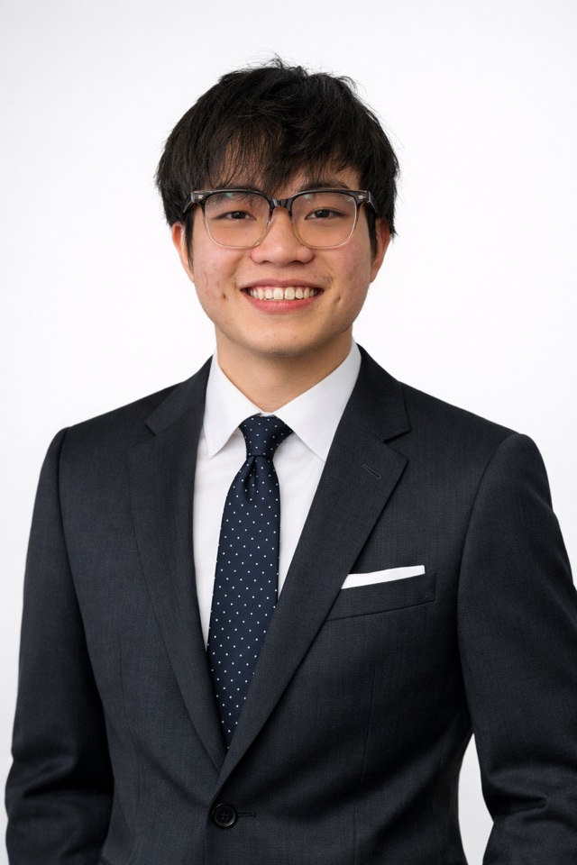

Research Assistant, HULA Lab with Prof. Hien Van Nguyen, University of Houston
I study how pathologists gather evidence on whole-slide images. I built TimeStamp, a tool that records where a pathologist looks, what they say, and in what order. A nephropathologist now uses it on real patient cases.
CS major, math minor. Applying to PhD programs for Fall 2027.

40×specimen: 1 undergrad
Research interestsComputer vision and multimodal learning for medical images, how clinicians search for diagnostic evidence, human–robot interaction for clinical training, and optimization for machine learning.
Research experience
where most of my time actually goes
Dec 2025to now
Research Assistant, Houston Learning Algorithms (HULA) Lab
Department of Electrical and Computer Engineering, University of Houston. Advisor: Prof. Hien Van Nguyen
Built TimeStamp end to end: a Java/JavaFX extension for QuPath plus a Python recorder that puts a pathologist's slide navigation, cursor trajectory, image events, and spoken dictation on one session clock. It exports word- and segment-level timestamps and event logs as CSV/JSON for analysis.
Traced a hard failure through the whole pipeline. During long dictation the live transcript looked incomplete. After Whisper settings and audio segmentation didn't fix it, I rebuilt live updates to show only words that stay stable across consecutive passes, then found a second cause: a display rule hiding a legitimate 137-word line that was already in the data.
Fixed timing so speech matches the screen: corrected clock alignment so speech after a pause is no longer stamped up to about 15 seconds early, and turned mouse tracking on by default so no trajectory data is lost.
Built for the clinician on the other end: transcript review that keeps the original text and timing, pause, resume, and crash recovery, exports verified with integrity checks, and one-step installers for Windows, macOS, and Linux that bundle their own Python and models, so a pathologist never sets anything up.
Analyze medical images, eye-gaze coordinates, and timestamps to study radiologist fatigue, satisfaction of search, and diagnostic performance.
now used by Dr. Jan Ulrich Becker on real patient cases ✓
HULA Lab, with Dr. Jan Ulrich Becker (nephropathology, University Hospital Cologne)
The idea: AI usually learns image → diagnosis. A physician actually inspects a region, observes evidence, updates their interpretation, and inspects the next region. We want to learn that loop: image + diagnostic history → current diagnostic state → next action → updated state.
Pilot: about 30 cases recorded during normal reading, with the image, mouse trajectory, dictation, findings, and final report synchronized, keeping extra annotation work for physicians to a minimum.
Questions: can we identify diagnostic stages, infer which finding is being investigated, predict the next region inspected or finding reported, and compare search strategies across physicians?
Spring 2027proposed
Provost's Undergraduate Research Scholarship (PURS)
Qian Group, University of Houston. Mentor: Prof. Peizhu (Pam) Qian
"A Robotic Tutor Supporting Educators Through Observability-Aware Scaffolding"
The problem: in nursing simulation, a robotic tutor can introduce challenges and watch for procedural mistakes, but its actions can also pull the educator's attention away from the student. If a mistake happens at that moment and nobody notices, the student loses the feedback. Even the lab's robotic tutor, ASTRID, missed about one in six expert-identified sterile-technique violations.
Research questions: (1) How can a robot supplement educators so that, together, fewer mistakes are missed? (2) When should it introduce a challenge so the learner benefits most?
My proposal, observability-aware scaffolding: time each challenge by whether the educator or the robot will actually be able to see the student's response.
Plan (15 weeks, about 100 hours): build simulated central-line procedure sequences with mentor-approved sterile-technique errors and a simulated Stretch robot. Then run a small observer pilot with timestamped responses and eye tracking, subject to IRB approval. Finally, model who detects each error (educator, robot, both, or neither) and compare a timing policy against scripted timing, a simple rule, and adaptive probing that ignores observability.
Next step from Prof. Qian's feedback: formalize the timing problem as a POMDP (partially observable Markov decision process), so the policy rests on a rigorous model of partial observability and attention rather than heuristics.
Funding decision pending
Summer 202610 weeks, full time
Summer Undergraduate Research Fellowship (SURF)
Office of Undergraduate Research, University of Houston. Mentor: Prof. Hien Van Nguyen. Collaborator: Dr. Jan Ulrich Becker
"Predictive Modeling of Clinician Fatigue and Diagnostic Accuracy via Eye-Gaze Analysis"
Proposed comparing expert and trainee gaze to separate three kinds of perceptual error: missing fixation, reduced fixation, and incomplete knowledge.
Prepared a large pathology corpus: the KPMP kidney biopsy collection of 6,515 whole-slide images from 604 participants (about 2.2 TB, seven stain groups), with clinical labels fully reconciled. I built analytics on glomeruli segmentation and morphometry across disease classes.
Designed a multi-observer dataset protocol in which the same slide is reviewed independently by several pathologists, with gaze, QuPath navigation, dictation, findings, and confidence synchronized. The goal is to study why a second finding gets missed after the first is found.
Deployed TimeStamp with Dr. Becker to record real pathology reading sessions.
Completed CITI human-subjects research training.
$4,000 fellowship
Spring 2026
Undergraduate Research to PhD (UR2PhD)
University of Houston. Mentor: Prof. Jianyi Yang
Proposed linking electricity-demand and price forecasts to EV charging strategies that reduce peak load and charging costs.
Designed comparisons of linear regression, random forests, and LSTMs on CAISO grid data and ACN-Data charging sessions, with transfer learning for data-scarce sites.
Planned SHAP/LIME interpretation and evaluation by RMSE, MAPE, simulated peak-load reduction, and charging-cost savings.
2025to 2026
ProtoWSSS: weakly supervised segmentation in histopathology
Collaboration led by Anh Mai Vu, PhD student
The method: a one-stage framework that learns tissue regions from image-level labels alone, guided by learnable image prototypes and prompt-guided text prototypes, with a diversity term to cover varied tissue appearance. Evaluated on BCSS-WSSS and LUAD-HistoSeg.
My part: reproduced reported experiments, traced discrepancies in the results, ran ablations, and changed code and settings to test improvements.
Summer 2025
Partial optimal transport with a mixed-norm regularizer
Acuitas Education summer research program. Supervisors: Minh Son Pham Dinh, Hai Lam Le, Gia Binh Tran, Minh Khoa Nguyen
Studied partial optimal transport, which moves only part of the mass between two distributions, with a mixed-norm elastic regularizer solved by an exterior-penalty method.
The work is now being prepared as a journal manuscript (see below).
Manuscripts
fingers crossed
Advanced to second-round review at WACV 2026 (IEEE/CVF Winter Conference on Applications of Computer Vision, Algorithms Track). Revised version in preparation for resubmission.
ProtoWSSS: Prototype-Guided Weakly Supervised Semantic Segmentation in Histopathology
Anh Mai Vu, Khang Phuc Le, Ha Thach, Thi Kim Trang Vo, Thanh-Huy Nguyen, Hung Nguyen Huy, Quynh Nguyen, Tuan Anh Le, Huynh Anh Hao Pham, et al.
Preparing for submission to Operations Research Letters (Elsevier)
An Exterior-Penalty Method for Partial Optimal Transport with a Mixed-Norm Elastic Regularizer
Khoa Nguyen, Minh Thong Huynh, Thu-Nhan Truong, Dung T. Nguyen, Huynh Anh Hao Pham, Hai Lam Le, Dinh Minh Son Pham, Gia Binh Tran, Minh Ngoc Dinh
Work experience
the other half of the week
Mar 2026to now
IT Support Agent
University of Houston, Houston, TX
Troubleshoot sign-in, password, account access, and system problems for students, faculty, and staff across the university's IT systems.
Find the root cause of account and system incidents, and work with the university's IT teams to resolve them instead of only patching the symptom.
Support identity and access management: account provisioning, multifactor authentication (MFA), access verification, and secure account practices.
Explain account-recovery procedures in plain language to students, faculty, and staff.
Root-cause analysisIdentity and access managementMFAClear communication
Jan 2024to Mar 2025
Lead Academic Tutor and Proctor
CASA Program, University of Houston, Houston, TX
Mentored more than 100 students in advanced mathematics and problem solving through guided practice, working through problems with them rather than for them.
Designed instructional materials to strengthen the math foundations that computer science courses depend on.
Proctored exams and supported testing-center operations, and streamlined the center's administrative workflows.